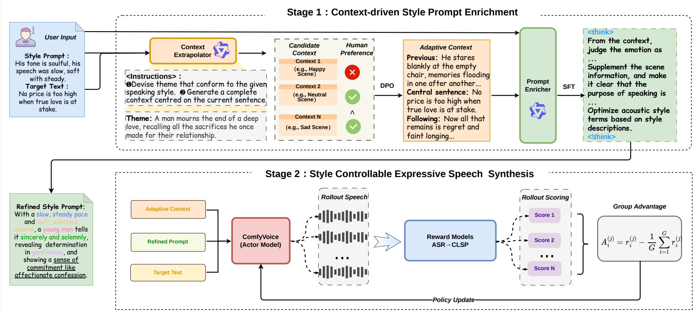
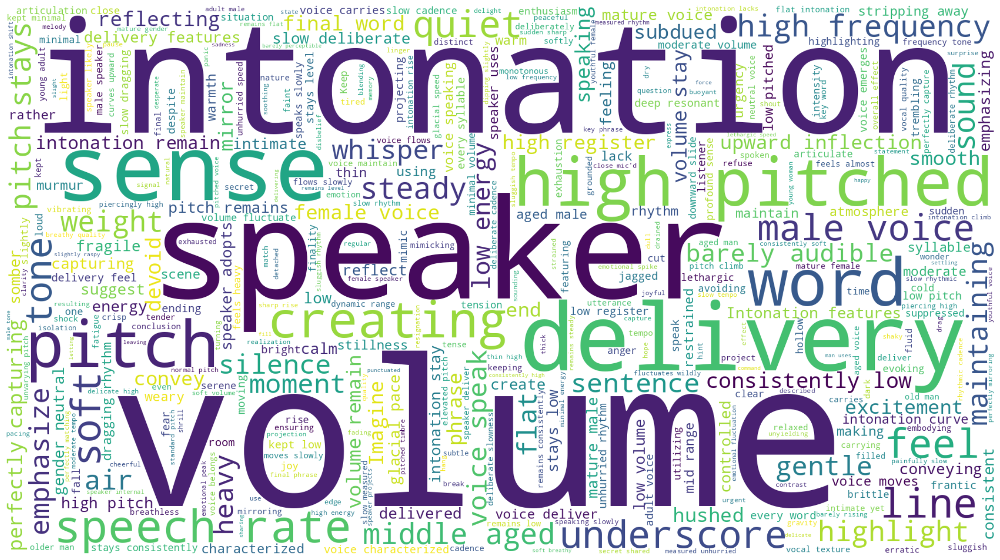

ComfyVoice
Abstract
Recent Prompt-TTS methods enhance speech stylization via incorporating textual style prompts to compensate for missing non-verbal paralinguistic information. In practice, however, user-provided style prompts are typically simplistic combinations of stylistic attributes with insufficient acoustic detail, while the underlying causal motivation of the style prompt acting on the target utterance is overlooked. This information asymmetry between concise user inputs and expected highly expressive speech outputs leads to severe semantic-style gap and degraded synthesis performance. To address these limitations, we propose ComfyVoice, a heuristic prompt enrichment framework for highly expressive speech synthesis. Specifically, we introduce a Context-Extrapolator that infers semantically coherent contextual content, uncovering implicit stylistic cues and situational knowledge missing from the user prompt. Subsequently, we finetune a Prompt-Enricher on a context-driven chain-of-thought dataset to generate detailed style descriptions tailored to both the contextual scenario and target style, effectively alleviating the semantic-style mismatch in direct prompt rewriting. Finally, to further narrow the gap between semantic adherence and acoustic realization, we optimize ComfyVoice by Group Relative Policy Optimization with a dynamic reward curriculum that initially prioritizes semantic fidelity, then progressively shifting to style prompt following capability. Extensive objective and subjective evaluations demonstrate that ComfyVoice effectively bridges the gap between user style prompts and high-quality acoustic generation, achieving superior stylistic expressiveness with minimal interaction effort.
Methodology

Automatic Prompt Enrichment
Our method enables the LLM to infer implicit context information and intent from the input text, dynamically adjusting the style of synthesized speech. Specifically, we use the Context-Extrapolator to generate Extrapolated Context surrounding sentences that encompass the scenario of the input text. Then Prompt-Enricher helps generate Fine-grained Style Description with greater nuance and expressiveness, which user coarse style description serves as initial guidance combined with extrapolated context.

| Text | Context Text | Original Style Description | Refined Style Description |
|---|---|---|---|
| I'll have a scoop of that exotic purple and turquoise sherbet. | The vibrant lights of the carnival spun in a dizzying blur as I stood before the towering ice cream cart, my heart pounding with an electric anticipation that seemed to vibrate through my very bones. I leaned forward, eyes wide and fixed on the swirling colors, and declared with a breathless intensity, I'll have a scoop of that exotic purple and turquoise sherbet. The vendor smiled warmly, scooping the frozen delight with a flourish that matched my own soaring excitement, ready to serve up a moment of pure, unadulterated joy. | The speaker's high-pitched voice resonated with slow, deliberate speech, exuding energy. | The delivery features a girlish, high-pitched tone that remains surprisingly steady and deliberate, contrasting the chaotic surroundings. She enunciates with crisp clarity, slowing down to savor the flavor of the words, while her volume pulses with an underlying electric charge. The intonation rises sharply on "turquoise," painting a sonic picture of the vibrant colors, ending the sentence on a note of breathless, triumphant joy. |
| His superiors had also preached this saying it was the way for eternal honor. | The scornful speaker's voice was charged with energy, the pace moderate. He leaned forward, his eyes narrowing as he dissected the empty rhetoric of the court. The room fell silent, waiting for his verdict on their grand illusions. His superiors had also preached this saying it was the way for eternal honor, yet he saw only the rot beneath the gilded surface, a farce played out for the amusement of the masses. | The scornful speaker's voice was charged with energy, the pace moderate. | A mature male baritone, speaking with a rhythmic, almost staccato cadence that feels charged with suppressed anger. The pitch remains steady but gains a metallic edge, highlighting the irony in the text. Volume is controlled yet intense, with a slight breathy quality before snapping into clarity on the final verdict, conveying a sense of cold, calculated judgment rather than hot rage. |
| I lent George three pounds. | The rain tapped a relentless rhythm against the windowpane as I stared at the empty ledger, the weight of our shared decline pressing down on my chest. I lent George three pounds, a desperate act of charity that only deepened the chasm between us, knowing full well he would never repay the debt of our friendship. | The mournful speaker's voice, though slow and low in energy, had an unexpectedly high pitch. | The narrator's voice is aged and husky, moving at a glacial pace with minimal force. Surprisingly, the pitch stays elevated and brittle, giving the words a ghostly, ethereal edge. The volume is consistently low, like a confession in the dark, while the intonation rises subtly, highlighting the tragic futility of the three pounds lent. |
Comparison of ComfyVoice and Baseline Prompt-TTS Systems
We provide a range of speech samples to exemplify the performance between ComfyVoice and the baseline models (PromptTTS、ParlerTTS、VoxInstruct、CosyVoice、Qwen3-TTS、MOSS-TTS) over different style prompt.
Input Text:They'd never know I'd regular ran away.
Original Style Description:A delighted speaker's low-energy demeanor is reflected in speaker's slow-paced speech and normal pitch.
Refined Style Description:This is a gentle, mid-range vocal performance delivered by an adult with a relaxed posture. The articulation is clear but slow, matching the slow motion of dust motes dancing in the sun. The speaker maintains a soft, hushed volume and a level pitch that occasionally dips slightly, evoking a sense of cozy, private happiness without any dramatic emotional spikes.
| PromptTTS | ParlerTTS | VoxInstruct | |
|---|---|---|---|
| CosyVoice | Qwen3-TTS | MOSS-TTS | ComfyVoice(Ours) |
Input Text:Sam waved his arm vaguely.
Original Style Description:The astonished speaker's speech was deliberate, with a high pitch and low energy.
Refined Style Description:The voice emerges as a high, trembling whisper, delivered with painstaking slowness and minimal energy. The intonation lacks stability, dipping and rising with a hollow resonance that mirrors his shock. He speaks with a detached vagueness, his low-volume utterances barely piercing the silence, embodying the sheer magnitude of the disbelief washing over him.
| PromptTTS | ParlerTTS | VoxInstruct | |
|---|---|---|---|
| CosyVoice | Qwen3-TTS | MOSS-TTS | ComfyVoice(Ours) |
Input Text:No the man was not drunk he wondered how he got tied up with this stranger.
Original Style Description:The speaker, a furious speaker, employs unhurried speech with a hint of normal energy.
Refined Style Description:With a hint of normal energy, the voice unfolds the sentence slowly, dragging out syllables to heighten tension. The tone is flat and resonant, neither whispering nor projecting, keeping the volume steady. A barely perceptible upward inflection lands on "stranger," cutting through the monotony to reveal a sharp, cold realization that underscores the speaker's intense, unhurried wrath.
| PromptTTS | ParlerTTS | VoxInstruct | |
|---|---|---|---|
| CosyVoice | Qwen3-TTS | MOSS-TTS | ComfyVoice(Ours) |
Input Text:She had your dark suit in greasy wash water all year.
Original Style Description:Speaking at a leisurely pace, speaker's enraged voice held a consistent high pitch.
Refined Style Description:With a leisurely, almost hypnotic rhythm, the speaker unleashes a high-pitched, furious scream that holds steady intensity. Her voice is loud and piercing, vibrating the very floorboards, as she drags out the words to maximize the horror of the accusation, keeping the pitch consistently elevated throughout the entire phrase.
| PromptTTS | ParlerTTS | VoxInstruct | |
|---|---|---|---|
| CosyVoice | Qwen3-TTS | MOSS-TTS | ComfyVoice(Ours) |
Input Text:Victor discussed the iron and the moth today.
Original Style Description:The speaker addresses others, speaking with speaker's deep voice in a regular rhythm and normal energy levels.
Refined Style Description:A deep, authoritative yet gentle male voice speaks with a measured, rhythmic cadence. The volume is moderate, projecting clarity without shouting, and the pitch stays low throughout. Emotional coloring is subtle, conveying a sense of wonder and seriousness through a steady, unwavering tone that emphasizes the ancient mystery of the trapped moth within the cold steel.
| PromptTTS | ParlerTTS | VoxInstruct | |
|---|---|---|---|
| CosyVoice | Qwen3-TTS | MOSS-TTS | ComfyVoice(Ours) |
Input Text:Clear are your eyes and bright your breath!
Original Style Description:A astonished speaker's treble voice is accompanied by normal speech speed.
Refined Style Description:A delicate, high-pitched female tone cuts through the air, marked by a sudden intake of breath. The volume is dynamic, starting low and expanding to a bright, crystalline clarity. Intonation features a distinct upward inflection on "eyes" and a soaring, open contour on "breath." The speech rate transitions from a startled quickness to a deliberate, reverent normality, highlighting the sacred return of light.
| PromptTTS | ParlerTTS | VoxInstruct | |
|---|---|---|---|
| CosyVoice | Qwen3-TTS | MOSS-TTS | ComfyVoice(Ours) |
Ablation Results in Different Settings of ComfyVoice
We conduct thorough ablation experiments to validate the contributions of different settings of ComfyVoice.
The Description of Different Granularities
| Setting | Text | Style Description | Speech |
|---|---|---|---|
| Full ComfyVoice | He owed mister Lawson, I can't tell you how. | The speaker, a mature female with a rich, textured timbre, articulates each syllable with slow, measured precision. Her volume is hushed and intimate, never rising above a conversational murmur, while the intonation stays remarkably level and detached. This deliberate lack of vocal fluctuation emphasizes the stoic suppression of her inner turmoil, making the silence between words feel heavier than the speech itself. | |
| Real Domain | He owed mister Lawson, I can't tell you how. | Mature female voice, thick timbre, slow and gentle speech, flat and restrained tone, deep emotions. | |
| Original Prompt | He owed mister Lawson, I can't tell you how. | The furious speaker's voice was tranquil and unhurried, speaker's words softly spoken. |
Module Ablation of Style Description Inference Chain
| Setting | Text | Audio |
|---|---|---|
| -w/o Context-Extrapolator (C-E) | He owed mister Lawson, I can't tell you how. | |
| Context-Extrapolator (C-E) -w/o DPO | He owed mister Lawson, I can't tell you how. | |
| -w/o Prompt-Enricher (P-E) | He owed mister Lawson, I can't tell you how. | |
| -w/o Perceptual Resample (PR) | He owed mister Lawson, I can't tell you how. |
Reward Design
To evaluate the impact of reward on style controllability and expressiveness, we design different reward for GRPO during reinforcement learning.
| Text | Reward | Refined Style Description | Speech |
|---|---|---|---|
| One even gave my little dog a biscuit. | SFT (w/o Reward) | With a breathy, low-register timbre, the voice moves slowly, pausing frequently to simulate the effort of speaking while nauseated. The volume is consistently hushed, creating a sense of secrecy and exhaustion, while the pitch stays flat and unvaried, lacking enthusiasm. This soft, monotonous delivery emphasizes the speaker's subdued energy, rendering the simple act of feeding the dog as a poignant, quiet moment of relief. | |
| ASR Score Only | |||
| CLSP Score Only | |||
| Even Weight Reward | |||
| Dynamic Reward | |||
| Aha what I have we here? | SFT (w/o Reward) | A vibrant, youthful tone crackles with sudden realization, utilizing a high, piercing pitch that conveys pure astonishment. The delivery is brisk yet punctuated by deliberate pauses, allowing the wonder to build. Volume shifts from a hushed, secretive murmur to a bright, open projection, with crisp consonants and a rising inflection that perfectly encapsulates the thrill of uncovering long-lost secrets. | |
| ASR Score Only | |||
| CLSP Score Only | |||
| Even Weight Reward | |||
| Dynamic Reward |
Impact of the Context Length
To evaluate the impact of extrapolated context length on style controllability and expressiveness, we vary the \(L_{0}\) ∈ {16, 32, 64, 96, 128} during speech generation.
| Text | Context Length | Refined Style Description | Speech |
|---|---|---|---|
| I think I've seen this before. | 16 | A mature voice with a steady, normal pitch and soft volume, delivered at a sluggish, relaxed speed. The emotional coloring is one of numb resignation, with a flat, monotone quality that suggests the speaker has lost all fight. The articulation is heavy, mirroring the physical sensation of being weighed down by nausea and despair. | |
| 32 | |||
| 64 | |||
| 96 | |||
| 128 | |||
| Why should I care though David's lips were twitching? | 16 | With a slow, staccato rhythm, a young female voice rises to a piercing, nasal register, conveying raw fury. The volume starts as a shaky whisper but explodes into a loud, trembling shout on the word "care," leaving a sharp, mocking echo in the air. | |
| 32 | |||
| 64 | |||
| 96 | |||
| 128 |